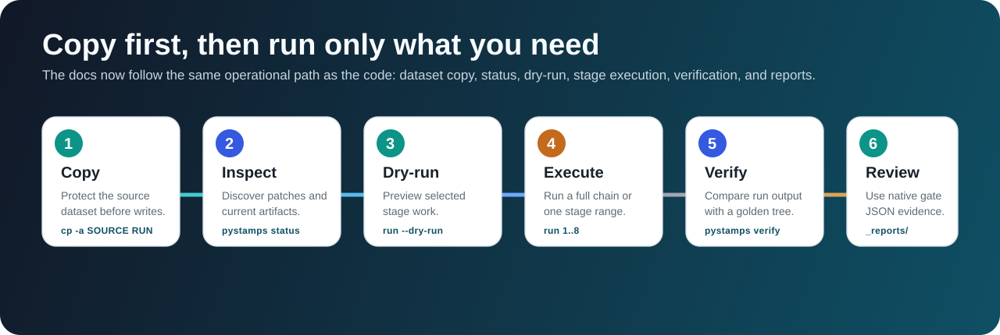
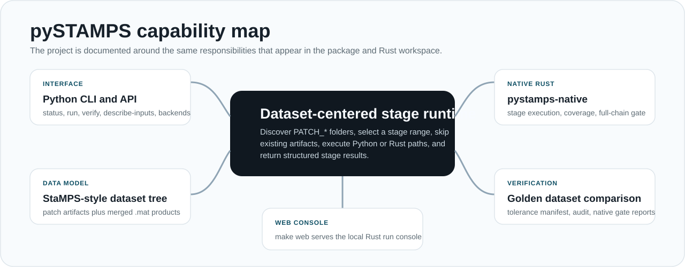

Run A Dataset
Use Quick Start for the shortest copy-first command sequence.
uv run pystamps status --dataset "$RUN_DATASET"
uv run pystamps run --dataset "$RUN_DATASET" --start-step 1 --end-step 8 --dry-runpySTAMPS works on a writable StaMPS-style dataset copy. The documentation now follows the operational path: copy the dataset, inspect status, dry-run the stage range, run the Python or native Rust path, then verify outputs against a reference tree.
The safe run pattern is copy-first and artifact-aware. Stages that already have their expected outputs report skipped_existing, so dry-run and status are part of normal use.

Use Quick Start for the shortest copy-first command sequence.
uv run pystamps status --dataset "$RUN_DATASET"
uv run pystamps run --dataset "$RUN_DATASET" --start-step 1 --end-step 8 --dry-runStages and Code Paths explains every stage, its artifacts, and the Python/Rust entrypoints that implement it.
uv run pystamps describe-inputs --stage allNative Rust CLI covers direct Rust execution, coverage, and the full-chain gate.
make native-full-chain-verifyThe working unit is a directory with PATCH_* folders, optional patch.list, input folders, and stage artifacts.
Patch-scoped stages prepare, score, select, weed, and promote candidates. Merged stages unwrap, correct, and filter dataset-level products.
Verification compares generated MAT artifacts against golden datasets with explicit tolerances and native gate reports.
The codebase has a Python package surface and a Rust native surface. The docs separate those responsibilities so users know which entrypoint to use.

| Need | Start Here | Then Read |
|---|---|---|
| First run | Quick Start | Verification |
| Stage meaning and code paths | Stages and Code Paths | Function Reference |
| Science background | Pipeline Guide | Architecture |
| Rust native operation | Native Rust CLI | Testing |
| Runtime tuning | Configuration | Usage |